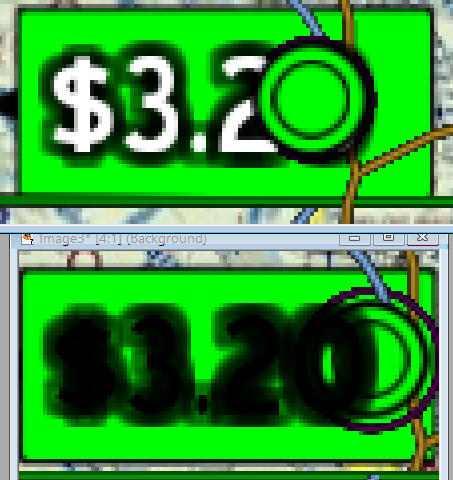

We are heavy users of RenderOrder to control which layer is on Top (rather than Y-position).
We want to overlay Text3D, but this class doesn’t appear to have a way to set the “RenderOrder”. When we check the “text3D.Material” property, it’s null, so we can’t set it that way.
Modanung
You could move the text to a separate scene and overlay it into the main one, or set a depthbias in the text’s material. But there are likely better ways involving Z-buffer magic and/or arcane depth writing.
Another option would be to use UI elements instead of components, but without more information about the exact goal you’re trying to achieve it’s hard to say which method would make more sense.
najak3d
Thanks for the answer! The most elegant solution would be to do this like we do for every other object in our scene:
model.Material.RenderOrder = {value}
However, for Text3D component, “text.Material” is NULL. We are using UrhoSharp, so maybe this NULL Material is only a defect of UrhoSharp, and maybe for Urho3D the Text3D material is not-null.
The other solutions would be awkward and/or limiting.
Modanung
UrhoSharp is a defect.
Starting my dive in QtCreator at /Source/Urho3D/UI/Text3D.h, I used Ctrl+Shift+U to find all occurrences of material_. I then noticed several if (!material_) lines which seemed worth investigating. This brought me to Text3D::UpdateTextMaterials:
It seems a temporary material is created if none is assigned, so you’d have to make it not null.
…or access the batch instead of the component.
najak3d
Modanung – I REALLY appreciate your attention and time here. Thank you!
If I set the Material to non-null, will that do anything for me? Will I then be able to set the Material’s Render Order and the Text3D object will comply? That would seem odd.
And regarding accessing the batch - how to do that?
It’s too bad UrhoSharp seems abandoned. Currently for .NET standard 2.0 (and similar), the leading proposal for 3D support is now UrhoSharp – which has these deficiencies/defects. If we could pay someone to fix these UrhoSharp bugs, I think we would. Who is qualified to fix UrhoSharp bugs?
Miguel is busy with other things, and Egorbor too is now busy with other things. Seems Urhosharp is mostly an orphan now – leaving .NET Standard 2.0 apps without a production-quality solution for 3D rendering.
Eugene
If you set custom material, you should be able to configure it however you want.
If you were doing C++, it wouldn’t be a problem to configure render order here:
It’s just C# that misses bindings.
najak3d
Eugene, using a custom material resolved our RenderOrder issue, however, the custom material I created, doesn’t look the same as the default material. In my screenshot below, the top image is the default material, with bad Z-order. The bottom image is using the new custom material (so Z-order is now on top, but the rendering is all messed up. Looks like it’s no longer getting the Colors… note, I tried to make the StrokeColor Yellow (for testing), but it’s still black.
Here is my C# code for creating this material:
var mat = new Material();
var tech = new Technique(priceNode.Context);
Pass pass = tech.CreatePass("alpha");
pass.VertexShader = "Text";
pass.PixelShader = "Text";
pass.BlendMode = BlendMode.Alpha; // (BLEND_ALPHA);
pass.DepthWrite = false; // SetDepthWrite(false);
mat.SetTechnique(0, tech);
mat.CullMode = CullMode.None; // SetCullMode(CULL_NONE);
mat.RenderOrder = 255;
mat.SetShaderParameter("ShadowColor", new Color(1f, 1f, 0, 1));
mat.SetShaderParameter("StrokeColor", new Color(1f, 1f, 0, 1));
text.Material = mat;

Eugene
That code snippet was for non-SDF text. Check the code below for SDF fonts, probably you need that one. I guess you have to add this one line:
najak3d
Eugene thanks! I got it working now. That did the trick, just adding this line:
===
However, it was still sorta ugly, so I modified the Text shader to make it smoother around the edges, and looks “OK”. There is still the escalator/dithering effect that occurs when we move the camera pixel-by-pixel (as it tracks your motion on the map).
We may still be making our own Text3D object (based off current one, but fixes this dithering). For now, this will get us by. The Z-Order issue is now fixed.
Thank you Eugene – I wouldn’t have figured this out without your advice!